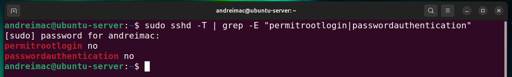
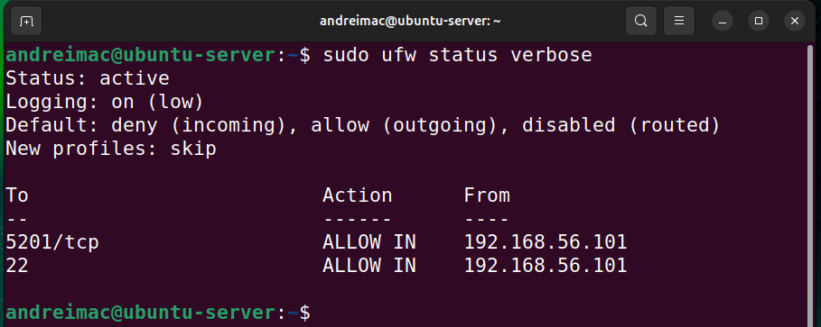
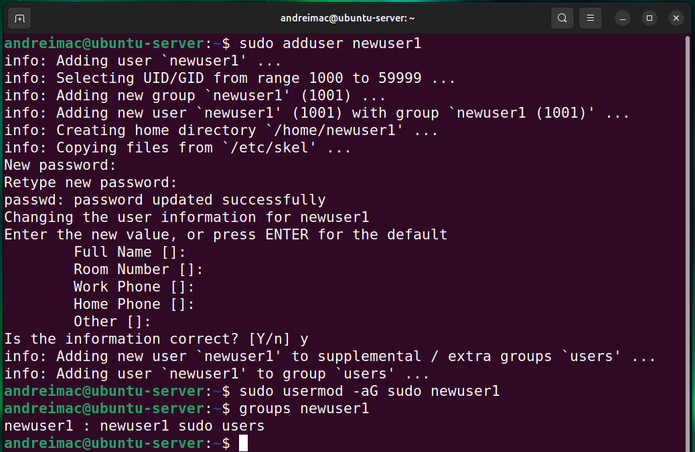
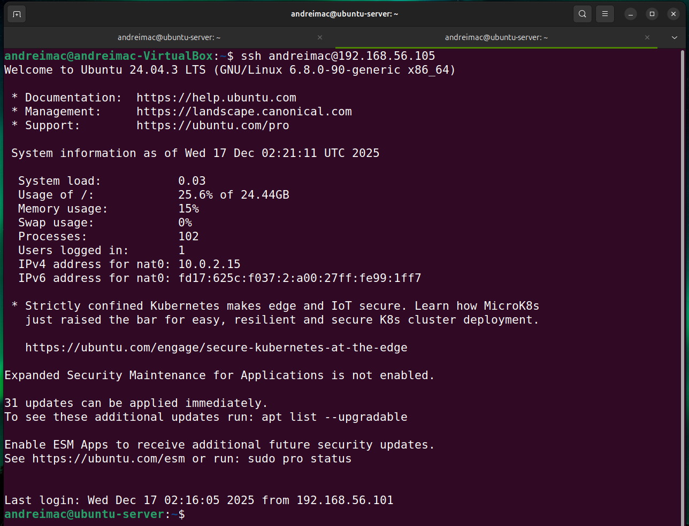
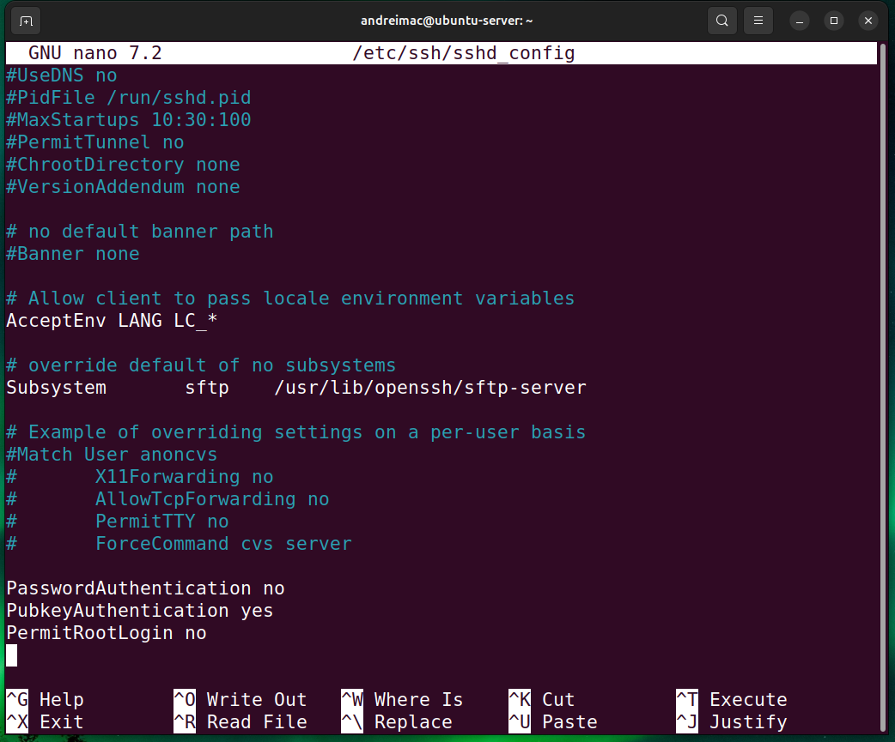
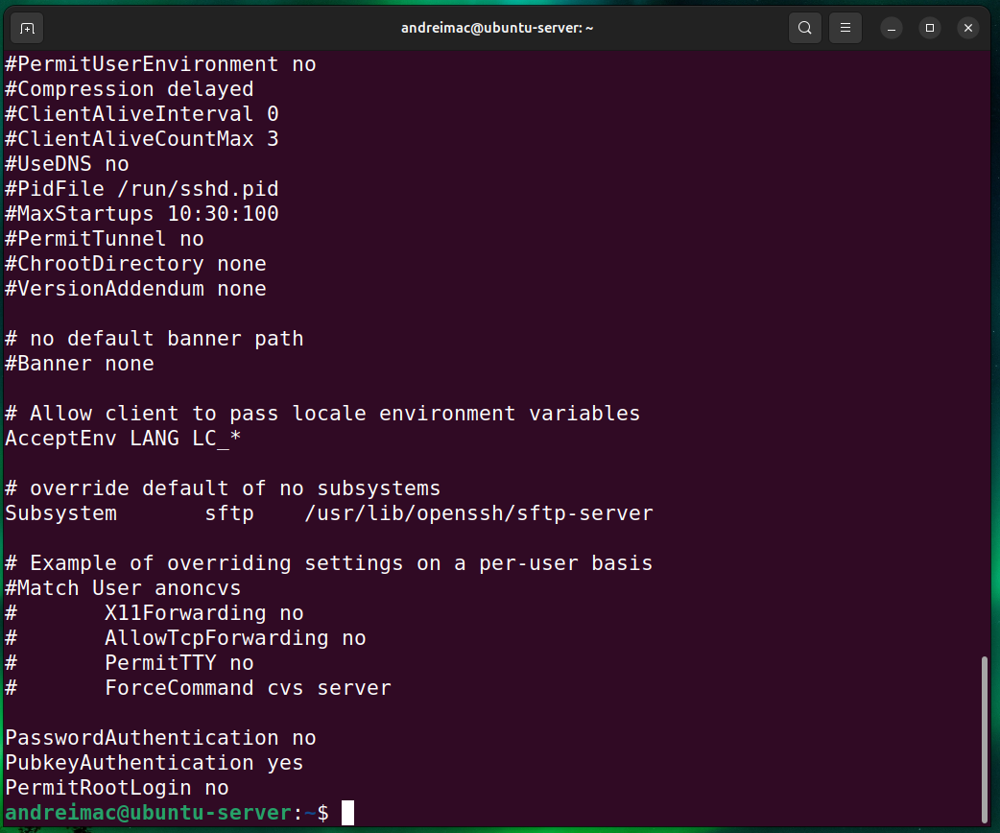
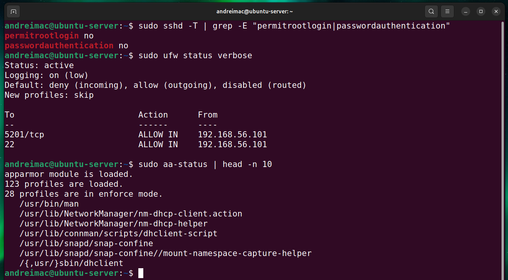
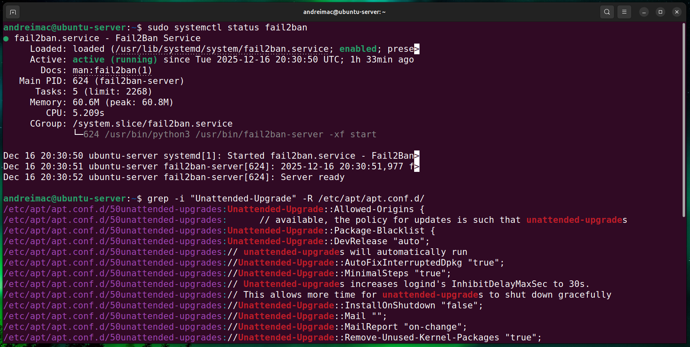

Week 4: Initial System Configuration & Security Implementation
Hardening the Ubuntu Server with SSH key-based authentication, firewall configuration, and secure user management, all performed via remote administration from the workstation.
Phase 4: Initial System Configuration & Security Implementation
This week focused on deploying the Ubuntu Server and implementing foundational security controls. Core system hardening measures were applied, including secure SSH configuration, firewall restrictions, and user privilege management. All server configuration tasks were performed remotely via SSH from a trusted workstation, in line with the administrative constraints of the coursework. The objective was to establish a secure baseline suitable for further security and performance enhancements.
Deliverables (Journal and Video)
- Configure SSH with key-based authentication
- Configure a firewall permitting SSH from one specific workstation only
- Manage users and implement privilege management, creating a non-root administrative user
- SSH Access Evidence showing successful connection screenshots
- Configuration Files with before and after comparisons
- Firewall Documentation showing complete ruleset
- Remote Administration Evidence demonstrating commands executed via SSH
1. Configure SSH with Key-Based Authentication
sudo sshd -T | grep -E "permitrootlogin|passwordauthentication"

2. Configure a Firewall Permitting SSH from One Specific Workstation Only
sudo ufw status verbose

3. Manage Users and Implement Privilege Management (Non-Root Administrative User)
sudo adduser newuser1
A non-root user account was created using adduser, ensuring administrative tasks are not performed directly as root. This improves system security by limiting the scope of privileges and enabling better accountability.
sudo usermod -aG sudo newuser1
The newly created user was added to the sudo group, granting controlled administrative privileges using the command: sudo usermod -aG sudo newuser1. This allows system management tasks to be performed without direct root access, improving security and accountability.
groups newuser1
This command verifies the group memberships of the newly created user. The output confirms that newuser1 belongs to the sudo group, granting controlled administrative privileges while maintaining separation from the root account. This demonstrates correct privilege management and adherence to the principle of least privilege

4. SSH Access Evidence (Successful Connection)
ping 192.168.56.105

ssh andreimac@192.168.56.105

5. Configuration Files (Before and After Comparisons)
sudo nano /etc/ssh/sshd_config
Before review stage.

After review stage.

6. Firewall Documentation (Complete Ruleset)
The active firewall rules were documented using sudo ufw status verbose, which shows the
default policies and per-rule configuration.
sudo ufw status verbose
In addition to the screenshot, the effective rules can be summarised as:
| Direction | From | To | Port / Service | Action |
|---|---|---|---|---|
| Incoming | 192.168.56.101 | Any | 22/tcp (SSH) 5201/tcp (Docker) | Allow |
| Incoming | Any | Any | All other ports | Deny (default) |
7. Remote Administration Evidence (Commands via SSH)
All administrative commands were executed remotely from the workstation over SSH. The following examples
were run from the adminuser@ubuntu-server:~$ prompt:
sudo sshd -T | grep -E "permitrootlogin|passwordauthentication"
This command verifies the effective SSH daemon configuration. The output confirms that root login and password-based authentication are disabled, ensuring that only key-based authentication is permitted. This significantly reduces the risk of brute-force and privilege escalation attacks.
sudo ufw status verbose
This command displays the complete firewall ruleset and default policies. The output confirms that the firewall is active, enforces a default deny policy for incoming connections, and allows SSH access only from the trusted workstation IP address, demonstrating controlled network access.
sudo aa-status | head -n 10
This command checks the status of AppArmor, Ubuntu’s mandatory access control framework. The output confirms that AppArmor is loaded and actively enforcing security profiles, which helps contain application behaviour and limit the impact of potential compromises.
grep -i "Unattended-Upgrade" -R /etc/apt/apt.conf.d/
This command confirms that unattended security updates are enabled. The configuration ensures that critical security patches are automatically applied, reducing exposure to known vulnerabilities and improving overall system security posture.
sudo systemctl status fail2ban
These commands provide operational visibility while respecting the remote-only administration constraint.



Reflection
Week 4 was about turning plans into enforceable controls. Enabling SSH key-based authentication and restricting SSH to the workstation significantly reduced the server's exposure to unauthorised access. Moving administration to a non-root sudo user follows the principle of least privilege and lowers the risk of accidental or malicious system damage.
Working exclusively over SSH strengthened my confidence in managing a headless Ubuntu Server. Comparing the SSH configuration before and after hardening made it clear how a few targeted changes—disabling root login and password authentication—can greatly improve system security. These measures now form a solid base for the deeper security verification and monitoring work planned for subsequent weeks.
References
- [1] Canonical, “OpenSSH Server — Key-Based Authentication,” Ubuntu Documentation. Available: https://ubuntu.com/server/docs/security-ssh. Accessed: Nov. 2025.
- [2] DigitalOcean, “How To Set Up SSH Keys on Ubuntu,” DigitalOcean Community. Available: https://www.digitalocean.com/community/tutorials/how-to-set-up-ssh-keys-on-ubuntu-20-04. Accessed: Nov. 2025.
- [3] Ubuntu, “UFW — Uncomplicated Firewall,” Ubuntu Documentation. Available: https://help.ubuntu.com/community/UFW. Accessed: Nov. 2025.
- [4] Red Hat, “Linux User and Group Management Overview,” Red Hat Docs. Accessed: Nov. 2025.
- [5] Canonical, “Hardening SSHD Configuration,” Ubuntu Security Guide. Available: https://ubuntu.com/security. Accessed: Nov. 2025.